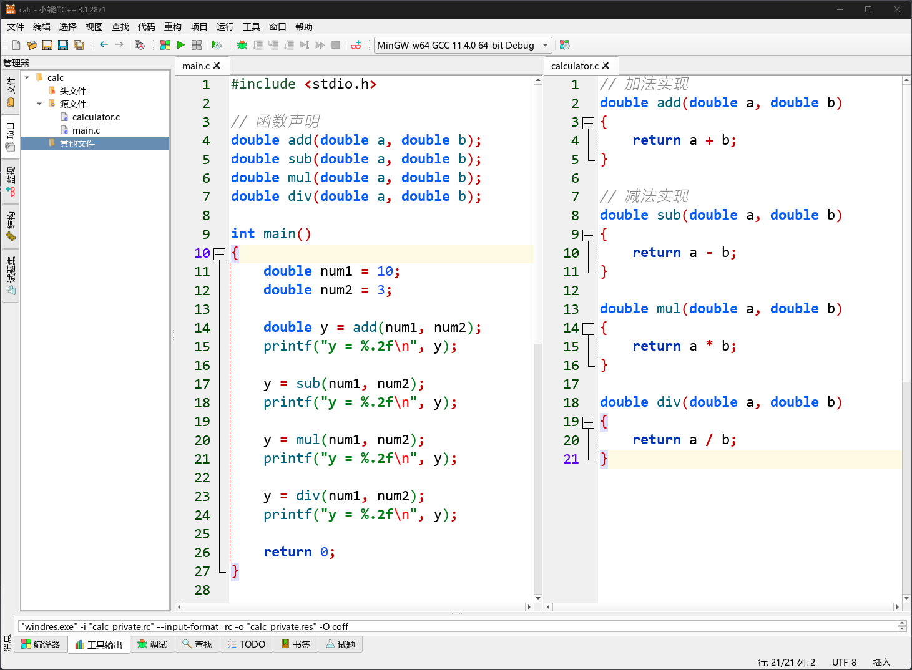
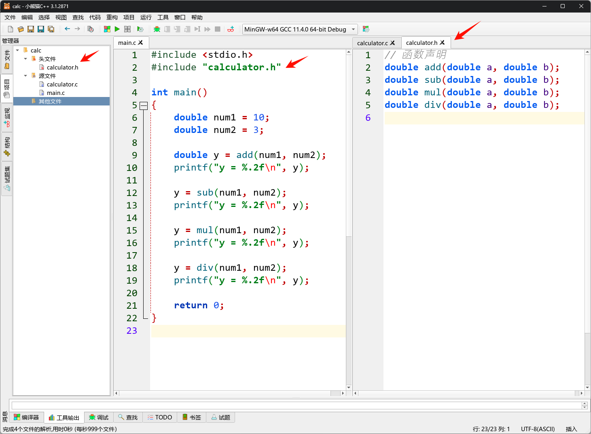
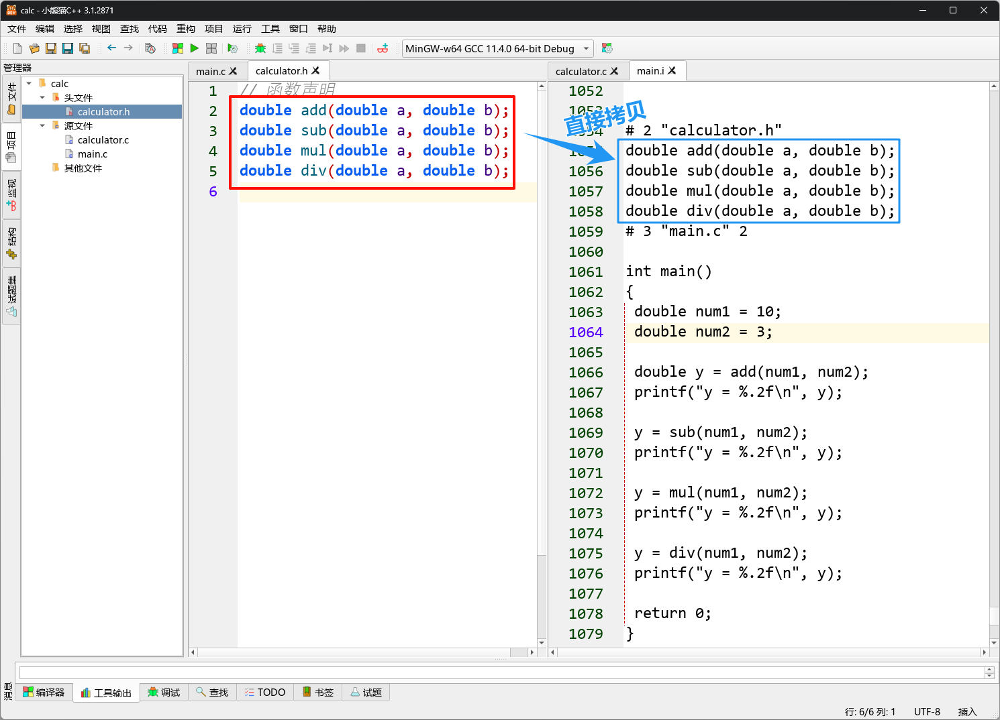
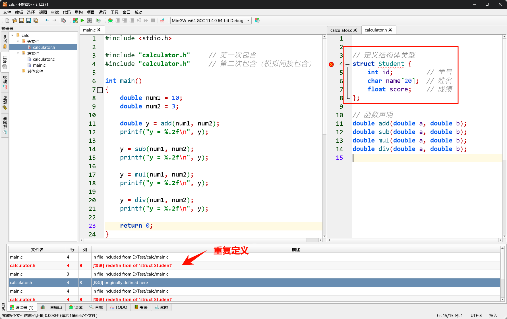
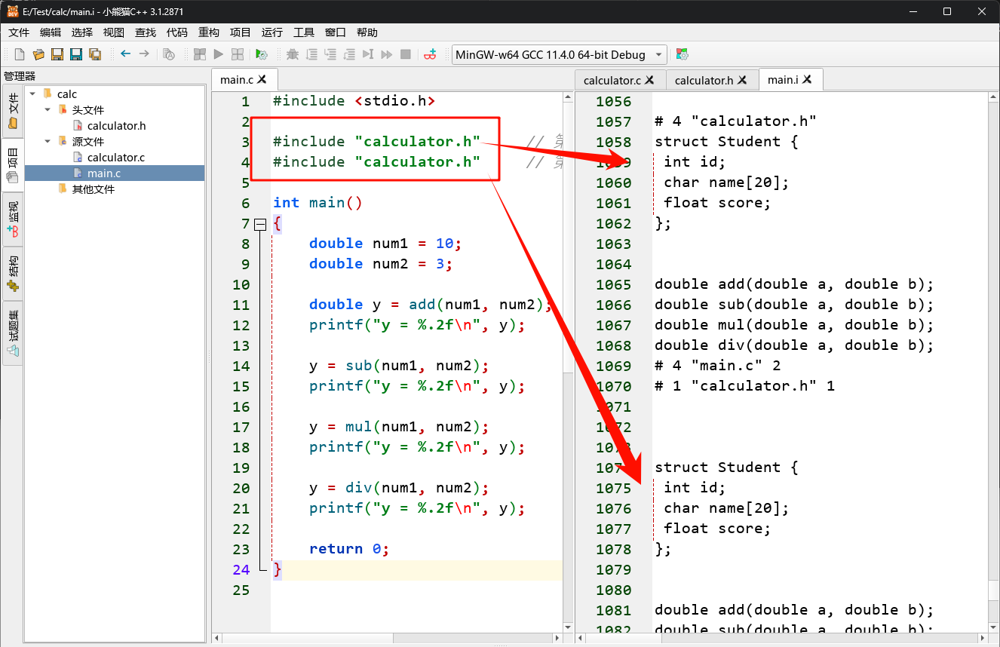
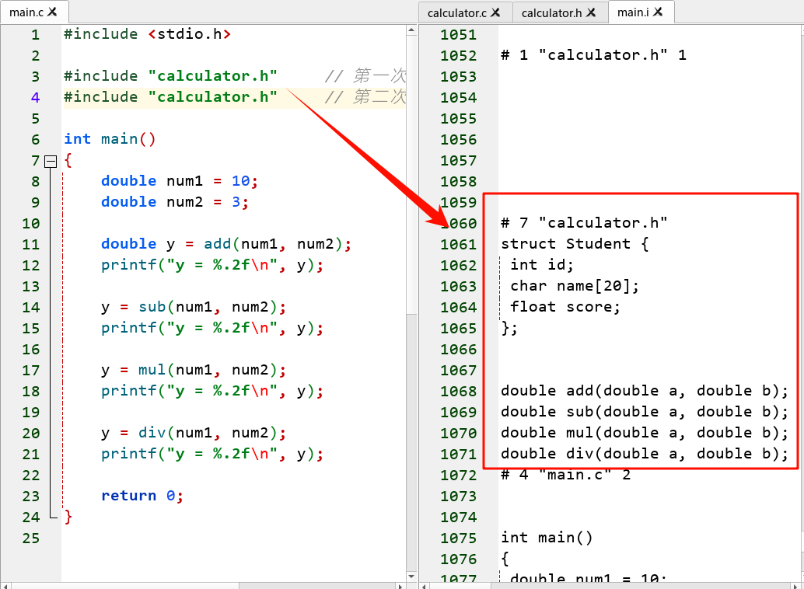

<!DOCTYPE lake>
<h1 data-lake-id="gmz6d" id="gmz6d"><span data-lake-id="ue72d2430" id="ue72d2430">1&gt; 多个源文件(.c)</span></h1><h2 data-lake-id="yynhu" id="yynhu"><span data-lake-id="ubcbb27c2" id="ubcbb27c2">1.1&gt; 单文件</span></h2><span class="yuque-card-unsupported">[codeblock]</span><p data-lake-id="u1e4ffa78" id="u1e4ffa78"><br/></p><hr/><h2 data-lake-id="PhYVW" id="PhYVW"><span data-lake-id="ua9157d02" id="ua9157d02">1.2&gt; 拆分为2个文件</span></h2><p data-lake-id="u96cdd09a" id="u96cdd09a"><span data-lake-id="u23c179be" id="u23c179be">将单文件main.c 拆分为 </span><code data-lake-id="ua0b95c16" id="ua0b95c16"><span data-lake-id="u37051ab8" id="u37051ab8">main.c</span></code><span data-lake-id="u1c234f23" id="u1c234f23"> 和 </span><code data-lake-id="u44173f26" id="u44173f26"><span data-lake-id="u5a81cd60" id="u5a81cd60">calculator.c</span></code></p><span class="yuque-card-unsupported">[codeblock]</span><span class="yuque-card-unsupported">[codeblock]</span><p data-lake-id="ue8557664" id="ue8557664"><span data-lake-id="u34e78bd1" id="u34e78bd1">改进后的优势：模块化设计</span></p><ul list="u6984d640"><li data-lake-id="u21293d86" fid="u6a6337c2" id="u21293d86"><span data-lake-id="u5f5f9dc2" id="u5f5f9dc2" style="color: #2F4BDA">代码复用</span><span data-lake-id="u89710e31" id="u89710e31">非常方便，新工程需要，直接把calculator.c拷走就行；</span></li><li data-lake-id="ue152b123" fid="u6a6337c2" id="ue152b123"><span data-lake-id="uc79584c2" id="uc79584c2" style="color: #2F4BDA">维护方便</span><span data-lake-id="u7b859311" id="u7b859311">，main.c负责主逻辑，calculator.c 负责计算， 哪里有问题找哪里；</span></li></ul><h2 data-lake-id="fyOlw" id="fyOlw"><span data-lake-id="ue730b80f" id="ue730b80f">1.3&gt; 存在问题</span></h2><p data-lake-id="u5d0d20fd" id="u5d0d20fd"><span data-lake-id="ua4d876b7" id="ua4d876b7">功能需求，现在需要增加乘法和除法函数，那你得</span></p><p data-lake-id="uba231ed8" id="uba231ed8"><span data-lake-id="u9513e093" id="u9513e093">第1步：在</span><code data-lake-id="u4e0d53d6" id="u4e0d53d6"><span data-lake-id="u3c823ac2" id="u3c823ac2">calculator.c</span></code><span data-lake-id="u54eafbcf" id="u54eafbcf"> 中增加相关函数</span></p><p data-lake-id="ub6943b0f" id="ub6943b0f"><span data-lake-id="uddea362a" id="uddea362a">第2步：在</span><code data-lake-id="u0bb4aac7" id="u0bb4aac7"><span data-lake-id="u0ee89357" id="u0ee89357">main.c</span></code><span data-lake-id="u14acfafc" id="u14acfafc">中增加函数声明</span></p><p data-lake-id="u2b810f23" id="u2b810f23"></p><p data-lake-id="ufa83e79c" id="ufa83e79c"><span data-lake-id="u60403f92" id="u60403f92">如果功能函数增多, main.c声明列表爆炸式增长，main.c 变得臃肿</span></p><ul list="u178a4d3c"><li data-lake-id="u8f7995cd" fid="u9381fb09" id="u8f7995cd"><span data-lake-id="ud1309095" id="ud1309095">每次新增函数都要手动在 main.c 里添加声明，容易遗漏或写错。</span></li><li data-lake-id="u0d305137" fid="u9381fb09" id="u0d305137"><span data-lake-id="u3958efc0" id="u3958efc0">main.c 本应只关注主逻辑，却被大量声明污染</span><span data-lake-id="udcc91271" id="udcc91271">👾</span><span data-lake-id="uf6409f30" id="uf6409f30">。</span></li></ul><hr/><h1 data-lake-id="avGl8" id="avGl8"><span data-lake-id="u2880c991" id="u2880c991">2&gt; 头文件（.h）</span></h1><h2 data-lake-id="nZtd1" id="nZtd1"><span data-lake-id="u140c1f90" id="u140c1f90">2.1&gt; 头文件作用</span></h2><p data-lake-id="u0597661e" id="u0597661e"><span data-lake-id="u65c69ec6" id="u65c69ec6">新建calculator.h, 将main.c中的函数声明，剪切到calculator.h中， main.c中包含头文件：</span></p><p data-lake-id="ud6a416a0" id="ud6a416a0"></p><p data-lake-id="u30342dcf" id="u30342dcf"><span data-lake-id="u1603bd7e" id="u1603bd7e">这样写，main.c就非常简洁了,</span></p><ul list="u653d789d"><li data-lake-id="ue7e4f5ff" fid="u795f78d2" id="ue7e4f5ff"><span data-lake-id="u8a85b172" id="u8a85b172">计算功能相关函数，一个.c和一个.h（calculator.c 和 calculator.h）完美的封装了计算功能，方便移植；</span></li><li data-lake-id="ue2b5be4c" fid="u795f78d2" id="ue2b5be4c"><span data-lake-id="ub3e00fef" id="ub3e00fef">main.c 中需要调用计算，跟调用</span><code data-lake-id="ub1cd2bb4" id="ub1cd2bb4"><span data-lake-id="u635544bb" id="u635544bb">printf()</span></code><span data-lake-id="u2b09488b" id="u2b09488b">类似，只需包含头文件</span><code data-lake-id="u3ef5a794" id="u3ef5a794"><span data-lake-id="u523b5e00" id="u523b5e00">stdio.h</span></code><span data-lake-id="u21f1caeb" id="u21f1caeb">后，用就完事了！</span></li></ul><hr/><p data-lake-id="u9f1f9992" id="u9f1f9992"><span class="lake-fontsize-12" data-lake-id="ub4097290" id="ub4097290" style="color: #000000">c文件（源文件）:</span></p><p data-lake-id="u54217b67" id="u54217b67" style="text-indent: 2em"><span class="lake-fontsize-12" data-lake-id="u21482280" id="u21482280" style="color: #DF2A3F">主要用于编写，函数和全局变量定义；</span></p><p data-lake-id="uded24721" id="uded24721"><span class="lake-fontsize-12" data-lake-id="u8d2b351e" id="u8d2b351e" style="color: #000000">h文件（头文件）:</span></p><p data-lake-id="u55bbeb5f" id="u55bbeb5f" style="text-indent: 2em"><span class="lake-fontsize-12" data-lake-id="u1ab144c2" id="u1ab144c2" style="color: #DF2A3F">主要用于编写，函数和全局变量声明，</span><a data-lake-id="u09a586e5" href="https://so.csdn.net/so/search?q=%E5%AE%8F%E5%AE%9A%E4%B9%89&amp;spm=1001.2101.3001.7020" id="u09a586e5" rel="noopener noreferrer" target="_blank"><span class="lake-fontsize-12" data-lake-id="u212b2ef5" id="u212b2ef5" style="color: #DF2A3F">宏定义</span></a><span class="lake-fontsize-12" data-lake-id="u1881f155" id="u1881f155" style="color: #DF2A3F">，结构体/枚举/共用体类型定义;</span></p><hr/><h2 data-lake-id="mPeoS" id="mPeoS"><span data-lake-id="uc10c9008" id="uc10c9008">2.2&gt; 头文件存放位置</span></h2><p data-lake-id="u5d2f484e" id="u5d2f484e"><span data-lake-id="ued96f382" id="ued96f382" style="color: #117CEE">#include</span><span data-lake-id="u80221b67" id="u80221b67"> </span><strong><span data-lake-id="u9d7c380e" id="u9d7c380e" style="color: #DF2A3F">"</span></strong><span data-lake-id="uc4d65546" id="uc4d65546">head.h</span><strong><span data-lake-id="u248f7171" id="u248f7171" style="color: #DF2A3F">"</span></strong><span data-lake-id="u70dbdd2c" id="u70dbdd2c"> 双引号形式，编译器会先在源文件所在目录找，找不到再去系统标准库路径查找；</span></p><p data-lake-id="ub35d28cb" id="ub35d28cb"><span data-lake-id="uc537f46e" id="uc537f46e" style="color: #117CEE">#include</span><span data-lake-id="udd682e6e" id="udd682e6e"> </span><strong><span data-lake-id="u4760202e" id="u4760202e" style="color: #DF2A3F">&lt;</span></strong><span data-lake-id="ub5669f3a" id="ub5669f3a">stdio.h</span><strong><span data-lake-id="u70827175" id="u70827175" style="color: #DF2A3F">&gt;</span></strong><span data-lake-id="u244bbf6e" id="u244bbf6e"> 尖括号形式，编译器只会在系统标准库路径查找；</span></p><p data-lake-id="uf2b0cb98" id="uf2b0cb98"><span data-lake-id="ua677cb7b" id="ua677cb7b">系统标准库路径，如</span><span data-lake-id="u96b7d288" id="u96b7d288" style="color: #ED740C">D:\RedPanda-CPP\MinGW64\x86_64-w64-mingw32\include</span></p><p data-lake-id="ufe5da3c8" id="ufe5da3c8"><span data-lake-id="u5116a912" id="u5116a912">​</span><br/></p><p data-lake-id="uc22bb2ff" id="uc22bb2ff"><span data-lake-id="ud2b758ba" id="ud2b758ba">编程规范：&lt;&gt;用于包含标准库头文件，""用于包含自定义头文件；</span></p><hr/><h2 data-lake-id="Xel7g" id="Xel7g"><span data-lake-id="u1c49188d" id="u1c49188d">2.3&gt; #include作用</span></h2><p data-lake-id="ua0bb340f" id="ua0bb340f"><span data-lake-id="u8bea2302" id="u8bea2302">在预处理阶段，将包含文件的内容原封不动，拷贝到 #include 的位置。</span></p><span class="yuque-card-unsupported">[codeblock]</span><p data-lake-id="u6874d554" id="u6874d554"></p><hr/><h2 data-lake-id="QRvsu" id="QRvsu"><span data-lake-id="u3c53c6cc" id="u3c53c6cc">2.4&gt; 重复包含</span></h2><h3 data-lake-id="EXXE4" id="EXXE4"><span data-lake-id="ue55f55bc" id="ue55f55bc">2.4.1&gt; 重复包含问题</span></h3><p data-lake-id="uc0fa1eb1" id="uc0fa1eb1"><span data-lake-id="uf6a73a74" id="uf6a73a74">一个工程中有多个.c都包含同一个.h文件时，就会出现重复包含：</span></p><p data-lake-id="uea8f3c9d" id="uea8f3c9d"><span data-lake-id="u65547b1a" id="u65547b1a">[错误] redefinition of 'struct Student'， 重复定义struct Stuent 类型，为什么会这样</span></p><span class="yuque-card-unsupported">[codeblock]</span><p data-lake-id="u3b9efbf2" id="u3b9efbf2"></p><p data-lake-id="ud88da6ab" id="ud88da6ab"><span data-lake-id="udbee19d3" id="udbee19d3">在预处理阶段，将包含文件的内容原封不动，拷贝到 </span><code data-lake-id="u5b686c9d" id="u5b686c9d"><span data-lake-id="udc43cce6" id="udc43cce6" style="color: #2F4BDA">#include</span></code><span data-lake-id="u72000326" id="u72000326">的位置， 包含了2次，所以就重复定义了，</span></p><p data-lake-id="uc3c9350e" id="uc3c9350e"><span data-lake-id="ud4aa8f3a" id="ud4aa8f3a">如何解决呢？</span></p><hr/><h3 data-lake-id="zCglL" id="zCglL"><span data-lake-id="u149d20bd" id="u149d20bd">2.4.2&gt; 防止重复包含</span></h3><span class="yuque-card-unsupported">[codeblock]</span><p data-lake-id="uad719ab8" id="uad719ab8"></p><p data-lake-id="uedbd0693" id="uedbd0693"><span data-lake-id="u7e6f81a4" id="u7e6f81a4">加了三句条件编译完美解决！</span></p><p data-lake-id="u37e4dcd2" id="u37e4dcd2"><span data-lake-id="u91580e65" id="u91580e65">分析过程：包含2次相等于重复2次</span></p><span class="yuque-card-unsupported">[codeblock]</span><p data-lake-id="u487f0140" id="u487f0140"><br/></p><span class="yuque-card-unsupported">[codeblock]</span><p data-lake-id="u452defef" id="u452defef"><span data-lake-id="u160e3088" id="u160e3088">通常符号的名字就取头文件的名字，如</span><code data-lake-id="u6ba2cec5" id="u6ba2cec5"><span data-lake-id="uf19c3472" id="uf19c3472">calculator.h</span></code><span data-lake-id="uc85386b3" id="uc85386b3">就用 </span><code data-lake-id="u88e1d1eb" id="u88e1d1eb"><span data-lake-id="u611d9775" id="u611d9775">__CALCULATOR_H__</span></code></p><hr/><h1 data-lake-id="CwsA5" id="CwsA5"><span data-lake-id="ucefbff12" id="ucefbff12">🐻</span><span data-lake-id="u5d01be4d" id="u5d01be4d">实践练习</span></h1><p data-lake-id="u1cfba181" id="u1cfba181"><span data-lake-id="u5b99abd4" id="u5b99abd4">功能需求：</span></p><p data-lake-id="ua08a3d8a" id="ua08a3d8a"><span data-lake-id="ua4191e6e" id="ua4191e6e">将之前学过的</span><span data-lake-id="ubbb9a741" id="ubbb9a741" style="color: #DF2A3F">所有基础功能</span><span data-lake-id="u96653986" id="u96653986">拆分为多文件工程，每个功能模块独立成 .c/.h 文件，最终通过 main.c 统一调用。</span></p><span class="yuque-card-unsupported">[codeblock]</span>